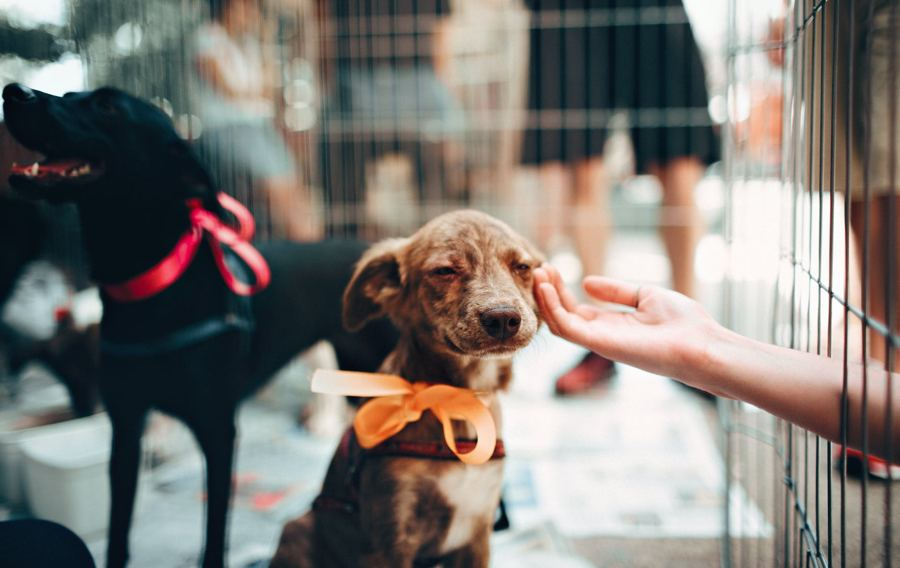
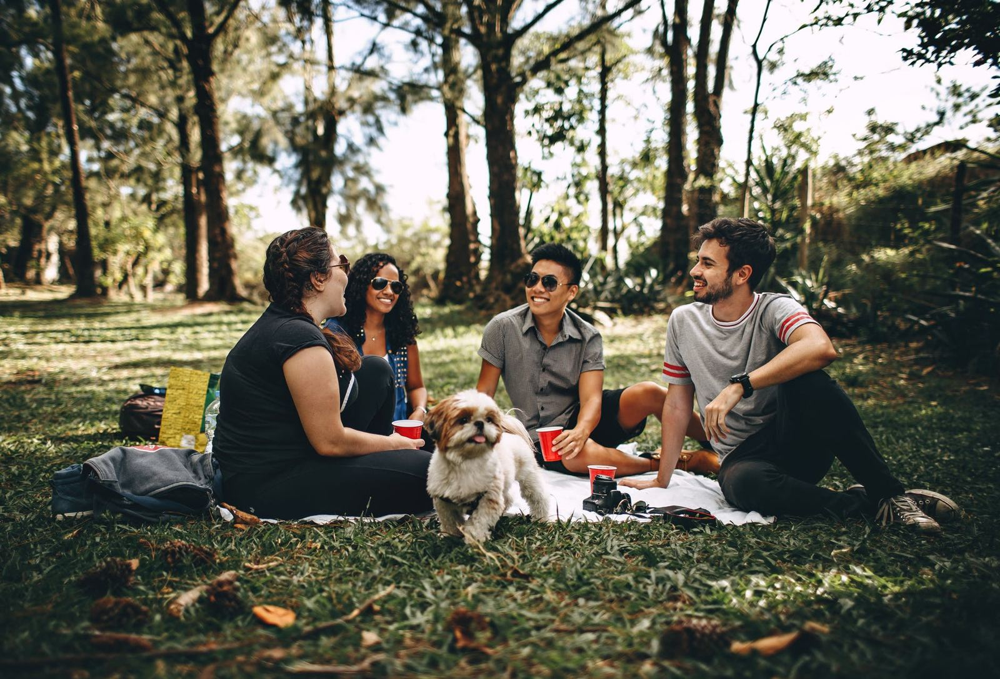
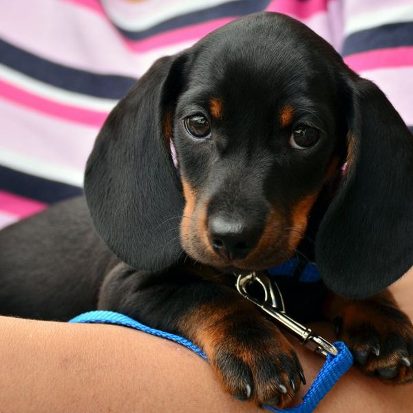
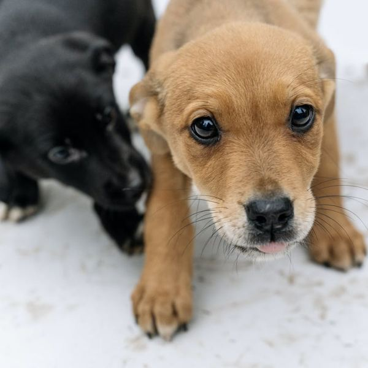
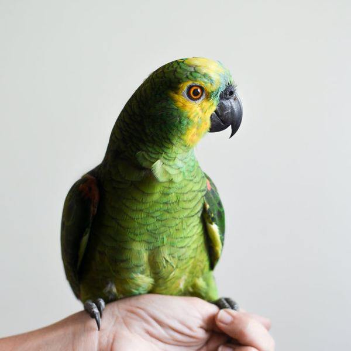
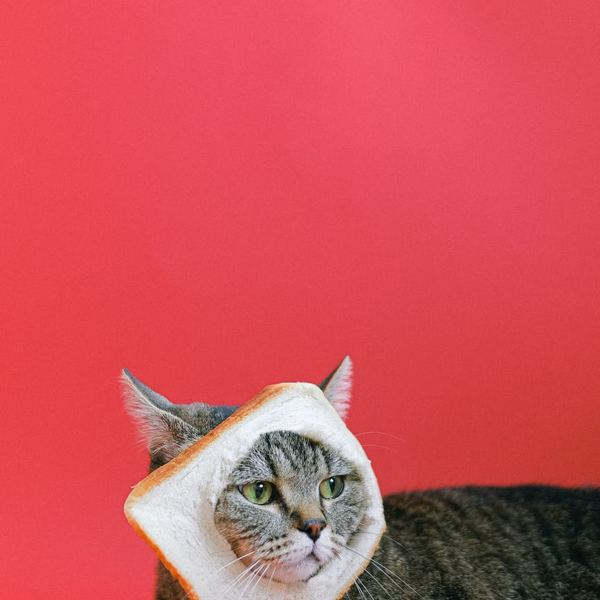
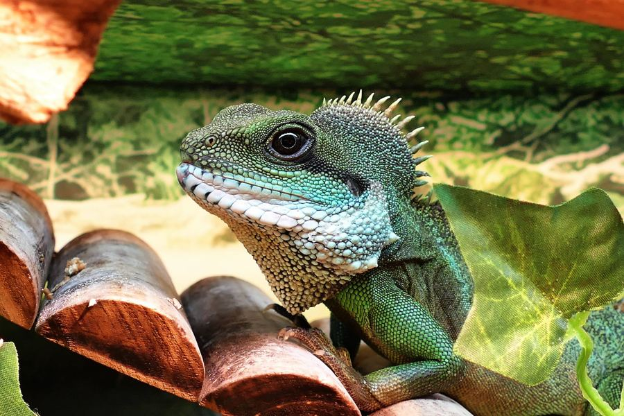
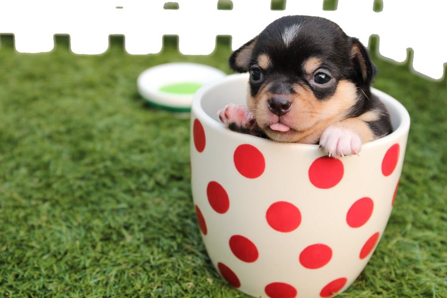

Adopta a tu mascota ideal
Piensa en tu espacio, tu tiempo y tu energía. La mejor mascota es la que encaja con tu estilo de vida.

En Patitas rescatamos animales que lo han perdido todo, les damos cuidados, cariño y una segunda oportunidad. Nuestra meta es que cada uno encuentre un hogar donde sea amado para siempre.
Acogemos animales abandonados o maltratados y les damos un lugar seguro.
Atención veterinaria, alimentación y mucho cariño hasta que llegue su familia.
Acompañamos el proceso para que la adopción sea responsable y feliz.
Están en busca de un hogar amoroso.





Piensa en tu espacio, tu tiempo y tu energía. La mejor mascota es la que encaja con tu estilo de vida.

Alimentación, salud, ejercicio y cariño: lo básico para que tu compañero viva feliz y sano.

Comparte con nosotros las travesuras de tu peludo y celebra a los compañeros que nos alegran el día.
Con donaciones, apadrinando a un animal o como voluntario, cada gesto suma.
Quiero ayudarEscríbenos y te respondemos lo antes posible.